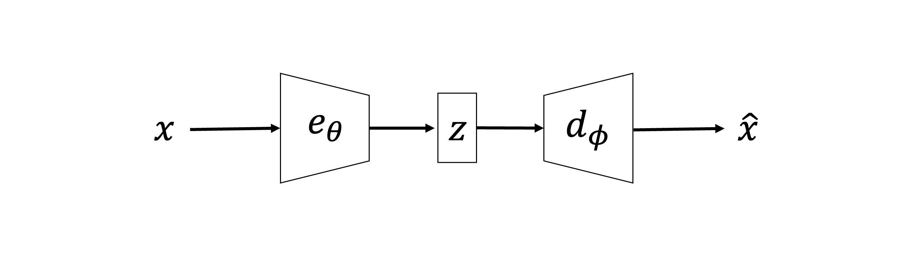

Dimensionality reduction
Up until now we have mostly focused on one family of Machine Learning methods, so-called Supervised learning. Whilst this is by far the most popular application in Deep Learning and the one that has reported greater success in the last decade, another family of methods that is becoming more and more popular falls under the umbrella of so-called Unsupervised learning.
When labelled data are scarce, or it is difficult to have access to ground truth labels (e.g., in geoscience), unsupervised learning can represent an appealing alternative to find patterns in data. Unsupervised learning comes in different flavours. For example let's imagine grouping a set of unlabelled data into a number of buckets and then analyse them one-by-one knowing that the samples within each bucket are more similar to each other than others in the dataset: this is a form of unsupervised learning called clustering. The flavour that we are going to discuss in more details in the following is however referred to as Dimensionality reduction. Simply stated dimensionality reduction can be described as:
Take \(N_s\) training samples \(\mathbf{x}^{(i)} \in \mathbb{R}^{N_f}\), (\(i=1,2,...N_s\)),
Find a smaller representation \(\mathbf{c}^{(i)} \in \mathbb{R}^{N_l}\) (\(N_l<<N_f\)) whilst making the smallest possible reconstruction error.
If you previously studied how data are stored in a computer transmitted via cable (or air), you may recall that this is the very same objective of data compression. For this reason, nowadays we can build on a vast body of literature when designing effective dimensionality reduction techniques. What it is however slowly becoming more and more evident is the fact that by identifying representative low-dimensional (also called latent) spaces from a set of data samples living in a much richer space, we can implicitly extract useful features to be later used in subsequent tasks of supervised learning. This two-steps approach is becoming very popular these days especially in fields of science that lack vast amount of labelled data as a way to take advantage as much as possible of unlabelled samples and then being able to fine-tune supervised models using small amounts of labelled data.
Before we consider a number of different approaches to dimensionality reduction, let's write the problem in a common mathematical form. Given a number of training samples $\mathbf{x}^{(i)}, we wish to identify:
- encoder: \(\mathbf{c}^{(i)} = e(\mathbf{x}^{(i)})\)
- decoder: \(\hat{\mathbf{x}}^{(i)} = d(\mathbf{c}^{(i)})\)
such that:
Principal Component Analysis (PCA)
The simplest approach to dimensionality reduction uses linear operators for the encoder:
- encoder: \(\mathbf{c}^{(i)} = \mathbf{E}\mathbf{x}^{(i)}\)
- decoder: \(\hat{\mathbf{x}}^{(i)} = \mathbf{D}\mathbf{c}^{(i)}\)
where \(\mathbf{E}_{[N_l \times N_f]}\) and \(\mathbf{D}_{[N_f \times N_l]}\). PCA aims to find representative features that are linear combinations of the columns of the encoder (i.e., \(\mathbf{c}=\sum_{i=1}^{N_f} \mathbf{E}_{:,i} x_i\)) such that the projection of these new features onto the original space (\(\mathbf{D}\mathbf{c}\)) is as close as possible to the original sample \(\mathbf{x}\). In other words, we want to find the best linear subspace of the original space that minimizes the reconstruction error defined here as the squared Eucliden norm (\(\mathscr{L}=||.||^2_2\)).
Defining a unique pair of matrices (\(\mathbf{E},\mathbf{D}\)) is however not possible without imposing further constraints. In the PCA derivation we must assume that the columns of \(\mathbf{D}\) are orthonormal:
By making such a strong assumption we can easily see that
is the choice of encoder-decoder that minimizes the reconstruction error. Let's now prove to ourselves that this is the case for a single training sample:
where for the moment we do not specify the decoder and simply call it \(d\). Let's first expand the loss function
where we can ignore the first term given it does not depend on \(\mathbf{c}\). At this point let's consider the special case of \(d()=\mathbf{D}\), which gives:
Finally we compute the derivative of the loss function over \(\mathbf{c}\):
where we have obtained that \(\mathbf{E} = \mathbf{D}^T\).
At this point we know what is the optimal linear encoder-decoder pair with respect to the MSE loss. However, we do not have a specific form for the matrix \(\mathbf{D}\) itself. In order to identify the entries of the decoder matrix, we need to set up another optimization problem, this time directly for \(\mathbf{D}\):
where \(\mathbf{X}_{[N_f \times N_s]}\) is the training sample matrix. To simplify our derivation let's consider the case of \(N_l=1\); the result can then be easily generalized for any choice of \(N_l=1\). Let's write
where in 6 we use the fact that \(\mathbf{d}^T \mathbf{d} = 1\). The solution of this maximization problem is represented by the eigenvector of \(\bar{\mathbf{X}}^T \bar{\mathbf{X}}\) associated to the largest eigenvalue (or the \(N_l\) largest eigenvalues for the general case).
We can therefore conclude that PCA is defined as:
- Take \(N_s\) training samples \(\mathbf{x}^{(i)} \in \mathbb{R}^{N_f}\), (\(i=1,2,...N_s\)),
- Compute the matrix \(\bar{\mathbf{X}}_{[N_s \times N_f]}\)
- Compute the SVD of \(\bar{\mathbf{X}}\) (i.e., eigenvalues and eigenvectors of the sample covariance matrix \(\bar{\mathbf{X}}^T \bar{\mathbf{X}}\))
- Form \(\mathbf{D}\) composed by the eigenvector associated with the \(N_l\) largest eigenvalues.
- Compute \(\mathbf{c}=\mathbf{D}^T \mathbf{x}\) and \(\hat{\mathbf{x}}=\mathbf{D} \mathbf{c}\).
More in general, it is also worth remembering that if the training data is not zero-mean, PCA can be slightly modified to take that into account:
where \(\boldsymbol\mu\) is the sample mean.
To conclude, let's try to provide some additional geometrical intuition of how PCA works in practice. Once again, let's recall the covariance matrix that we form and create SVD on:
The eigenvalues \(\lambda_i\) of \(\mathbf{C}_x\) relate to the variance of the dataset \(\mathbf{X}\) in the direction of the associated eigenvector \(\mathbf{v}_i\) as follows (we use a 2d example for simplicity):
so we observe that the first direction of PCA (i.e. \(\mathbf{v}_1\)) is the one that best minimizes the reconstruction error (i.e., \sum_i d_{i,1}). In multiple dimensions, the eigenvectors are organized in order of reconstruction error of the projected data points from smallest to largest.
Other linear dimensionality reduction techniques
Whilst PCA is very popular for its simplicity (both of understanding and implementation), other techniques for linead dimensionality reduction exist. As some of them has been shown during the years to be very powerful and better suited to find representative latent representations from data, we will briefly look at them here.
Indipendent Component Analysis (ICA)
ICA aims to separate a signal into many underlying signals that are scaled and added together to reproduce the original one:
where in this case \(\mathbf{c}\) has the same dimensionality of \(\mathbf{x}\). This model is in fact commonly used for blind source separation of mixed signals. Despite it is strictly speaking not a dimensionality reduction technique, we discuss it here due to its ability of finding representative bases that combined together can explain a set of data.
Once again, the problem is in need for extra constraints for us to be able to find a solution. In this case the assumption made of the \(\mathbf{w}_i\) signals is as follows:
Signals \(\mathbf{w}_i\) must be statistically indipendent from each other and non-gaussian
A solution to this problem can be obtained finding the pair (\(\mathbf{W}, \mathbf{c}\)) which maximises non-gaussianity (i.e., minimizes normalized sample kurtosis) or minimizes mutual information (MI). Whilst we don't discuss here in details how to achieve such solution, it is worth pointing out that this requires solving a nonlinear inverse problem as \(\mathbf{W}\) relates in a nonlinear manner to kurtosis or MI.
Sparse Coding (or Dictionary Learning)
Sparse coding is another heavily studied model for dimensionality reduction. The general idea has origin in a large body of work carried out in other areas of applied mathematics where hand-crafted transformations (e.g., wavelets) habe been identified to nicely represent data of different kind (e.g., images, sounds, seismic recordings) in a very sparse fashion. Here sparse refers to the fact that the transformed signal can be represented by a vector with many zeros and just few non-zero entries.
In this context, however, the transformation is represented a matrix \(\mathbf{W}\), whose entries are once again learned directly from the available training data. This is achieved by imposing a strong condition on the probability distribution associated with the latent vector \(\mathbf{c}\):
in other words, a fat tailed distribution, whose samples are therefore sparse. By making such an assumption, no closed form solution exist like in the PCA case. Instead the training process is set up with the following goals in mind:
- Find sparsest latent representation during the encoding phase
- Find a decoder that provides the smallest reconstruction error
which mathematically can be written as:
$$ \begin{aligned} \hat{\mathbf{W}}, \hat{\mathbf{h}} &= \underset{\mathbf{W}, \mathbf{h}} {\mathrm{argmax}} p(\mathbf{h}|\mathbf{x}) &= \underset{\mathbf{W}, \mathbf{h}} {\mathrm{argmin}} \beta ||\mathbf{h}-\mathbf{W}\mathbf{h}||_2^2 +\lambda ||\mathbf{h}||_1 \end{aligned} $$ where \(\beta\), \(\lambda\) are directly related to the parameters of the posterior distribution that we wish to maximize. This functional can be minimized in an alternating fashion, first for \(\mathbf{W}\), then for \(\mathbf{x}\), and so on and so forth.
Finally, once the training process is over and \(\hat{\mathbf{W}}\) is avaiable, it is worth noting that sparse coding does require solving a sparsity-promoting inverse problem for any new training sample \(\mathbf{x}\) in order to find its best representation \(\hat{\mathbf{h}}\). Nevetheless, despite the higher cost compared to for example PCA, sparse coding has shown great promise in both data compression and representation learning, the latter when coupled with down-the-line supervised tasks.
Autoencoders
Finally, we turn our attention onto nonlinear dimensionality reduction models. We should know by now that nonlinear mappings (like those performed by NNs) may be much more powerful than their linear counterpart is used to our advantage.
The most popular nonlinear dimensionality techniques dates back to 1991 and the work of M. Kramer. Simply put, an autoencoder is the combination of an encoder function \(e_\theta\), which converts the input data into a latent representation, and a decoder function \(d_\theta\), which converts the new representation back into the original format. Here, both \(e_\theta\) and \(d_\theta\) and nonlinear and fully learned and stack one after the other as shown below

An autoencoder can therefore be simply defined as:
where similar to PCA, the training process is setup such the parameters of the two networks are optimized to minimize the following loss function:
Once again, our code (or latent vector) must be chosen to be of lower dimension compared to the input in order to be able to learn useful representations. On the other hand if we choose \(l \ge n\), we will likely not learn something useful: very likely what we are going to learn is to reproduce the identity matrix.
Additional readings
- the following resource provides a detailed explanation of the theory of ICA (and a simple Python implementation!)